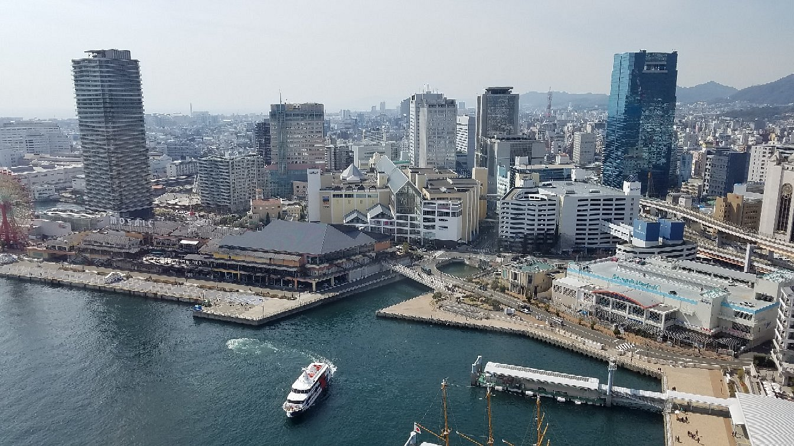

Course
핵심 간사이 3박 4일 코스
DAY 1
10:00 간사이 국제공항 입국
★시내 교통편/공항급행 이용권 및 주요 명소 무료입장이 포함된
오사카 주유 패스 난카이 공항판 구매.
→ 난카이 전철 공항급행(42분) 난바역
12:00 오사카 시내 도착, 숙소에 짐 맡기기 → 숙소 근처에서 런치타임
→ 지하철 타나마치욘초메역 이동(도보10분 + 지하철 6분)
14:00 오사카 성
★오사카 공원 산책하며 여행 첫날 몸풀기!!

→ 도보 10분 + 지하철 6분
히가시우메다역 + 도보 5분
15:30 헵 파이브
★오사카 주유 패스가 있으면 무료! 도심속 관람차 즐기기!!

→ 도보 15분
16:30 우메다 스카이 빌딩
★오사카를 대표하는 공중정원 전망대에 오르자.

→ 도보12분 + 지하철7분 신사이바시역
18:30 신사이바시 상점가
★365일 축제 분위기인 오사카의 메인 상점가를 둘러보자.
19:30 도톤보리
★오사카 여행의 꽃! 오사카 대표 먹거리를 즐기며 도톤보리 구경에 나서자
디너 ＆ 디저트 타임

→ 도보 5분
21:30 신세카이
★복고적인 분위기와 오사카의 서민 문화를 느끼며 환상적인 안주와 술 한 잔으로 보람찬 하루를 마무리!
→ 숙소 이동
DAY 2
JR 간사이 미니패스 개시
→ JR 30분(오사카역 출발 기준) 교토역
09:00 교토역 도착
→ 시 버스 80/100/202/206/207번 30분 기요미즈미치 또는 고죠차카 정류장 + 도보10분
11:00 기요미즈테라
★교토의 모든 매력이 집약된 인기 관광지. 교토 초심자라면 무조건 이곳부터!

→ 산넨자카 ＆ 니넨자카 산책하며 도보 30분
13:00 기온
★야사카 신사, 하나미코지도리 등 볼거리와 먹거리로 가득한 게이코 ＆ 마이코의 거리를 걸어보자.
런치 ＆ 디저트 타임
→ 시 버스 86/100/106/110/206번 20분 교토 + JR 12분 사가아라시야마역
15:00 아라시야마
★아름다운 산과 강에 둘러싸인 고팔과 대나무숲 매력에 빠져보자.


→JR 12분(아라시야마역 출발 기준) 교토역
19:00 교토역
★역 주변에 밀집한 알짜배기 기념품 쇼핑! 리뉴얼한 교토 타워도 살짝 엿보자.
디너 타임

→ JR 30분 오사카역 + 숙소 이동
DAY 3
JR 간사이 미니패스 사용
→ JR 45분(난바역 출발 기준) 나라역
10:00 나라 공원
★1만2000여 마리의 사슴이 뛰노는 공원에서 힐링 타임!

→ 도보 20분
12:00 도다이지
★어마어마한 크기의 청동 대불이 안치된 일본 굴지의 사찰을 둘러보자.
런치타임
→ 도보 20분
14:00 나라에서 고베로 출발
→ JR 1시간 24분(나라역 출발 기준) 모토마치역 + 도보 10분
16:00 메리켄 파크
★푸른 바다와 낭만이 숨쉬는 항구도시 고베의 여유를 만끽하자.

→ 도보 10분
17:30 고베 하버랜드
★쇼핑, 인기 디저트를 맛보고, 고베 여행의 하이라이트인 멋진 야경을 감상하자!
→JR 3분 산노미야역
20:00 산노미야
★혀에서 살살 녹는 고베규로 든든하고 만족스러운 저녁을 즐기자.
디너 타임


→ JR 21분 오사카역 + 숙소 이동
DAY 4
JR 간사이 미니패스 사용
→ JR 난바역에 짐 맡기기
→ 도보 15분
09:00 쿠로몬 시장
★맛있는 냄새 쏠솔 풍기는 재래시장에서 아침맞이!
→ 도보 25분
11:00 텐텐타운
★서일본 최대 전자 상가. 일본 애니메이션과 게임을 좋아한다면 필수 코스다.
→ 도보 10분
12:00 난바 파크스
★대형 쇼핑몰에서 기념품 쇼핑!
쇼핑 ＆ 런치 타임
JR 난바역에서 짐 찾기
→ JR 칸쿠쾌속 1시간 간사이쿠코역
15:30 간사이 국제공항 도착
★공항에서 마지막 식사와 쇼핑으로 아쉬움을 달래자.
→ JR 30분(오사카역 출발 기준) 교토역
★교토의 모든 매력이 집약된 인기 관광지. 교토 초심자라면 무조건 이곳부터!
★야사카 신사, 하나미코지도리 등 볼거리와 먹거리로 가득한 게이코 ＆ 마이코의 거리를 걸어보자.
런치 ＆ 디저트 타임
★아름다운 산과 강에 둘러싸인 고팔과 대나무숲 매력에 빠져보자.
★역 주변에 밀집한 알짜배기 기념품 쇼핑! 리뉴얼한 교토 타워도 살짝 엿보자.
디너 타임
→ JR 45분(난바역 출발 기준) 나라역
★1만2000여 마리의 사슴이 뛰노는 공원에서 힐링 타임!
★어마어마한 크기의 청동 대불이 안치된 일본 굴지의 사찰을 둘러보자.
런치타임
→ JR 1시간 24분(나라역 출발 기준) 모토마치역 + 도보 10분
★푸른 바다와 낭만이 숨쉬는 항구도시 고베의 여유를 만끽하자.
★쇼핑, 인기 디저트를 맛보고, 고베 여행의 하이라이트인 멋진 야경을 감상하자!
★혀에서 살살 녹는 고베규로 든든하고 만족스러운 저녁을 즐기자.
디너 타임
→ JR 난바역에 짐 맡기기
→ 도보 15분
★맛있는 냄새 쏠솔 풍기는 재래시장에서 아침맞이!
★서일본 최대 전자 상가. 일본 애니메이션과 게임을 좋아한다면 필수 코스다.
★대형 쇼핑몰에서 기념품 쇼핑!
쇼핑 ＆ 런치 타임
→ JR 칸쿠쾌속 1시간 간사이쿠코역
★공항에서 마지막 식사와 쇼핑으로 아쉬움을 달래자.